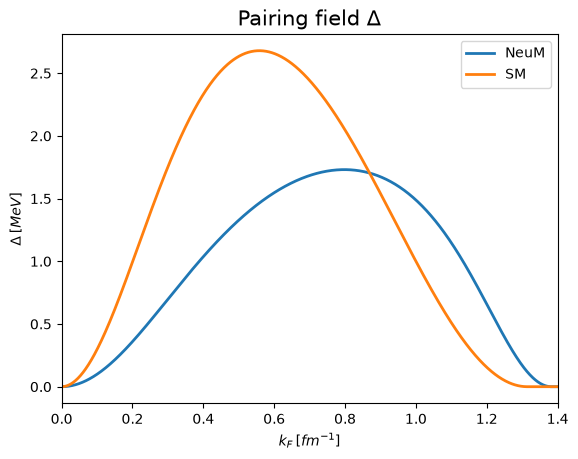
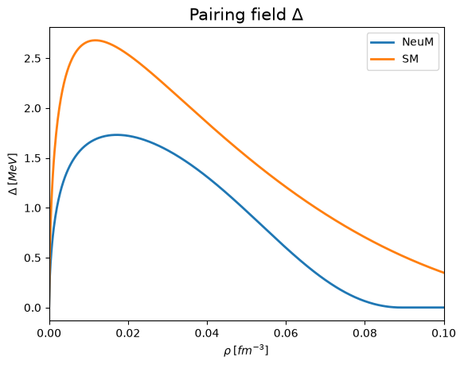
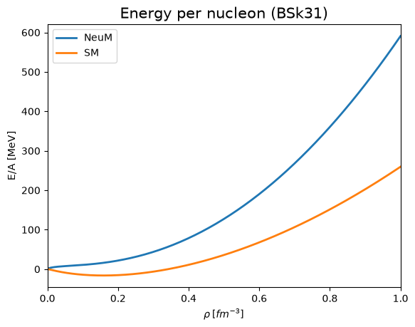
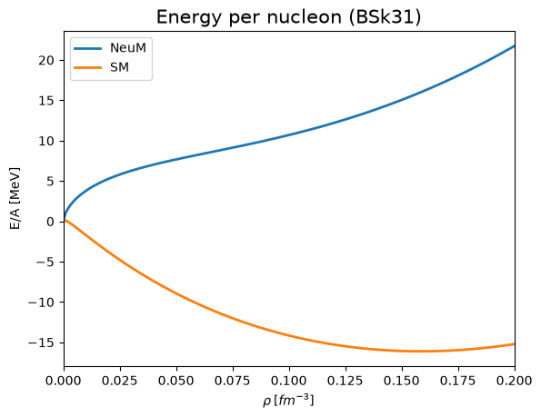

Physics
Here you can find a brief introduction to the physics of neutron stars.
Structure of Neutron Star
Crust
In the crust we can show certain densities that are relevant. The major division is to outer crust and inner crust.
Pairing S




Density Functional
Skyrme force
The first paper about vortex pinning within a fully dynamical approach in neutron matter was [WlazlowskiSM+16]. A standard SLy4 type of functional was used (see [BMRS16]) of the following form:
where the consecutive terms have a physical meaning and interpretation (see Sec. 2 in [CBH+98]):
\(t_0\): contact (zero range) interaction
\(t_1, t_2\): momentum exchange (finite range term) and effective mass term (which is proportional to the kinetic density \(\tau\))
\(t_3\): for \(\gamma \rightarrow 1\) it is the three body term averaged over the third particle; in general a density-dependent term
\(W_0\): spin-orbit coupling
It turns out, that similarly as for the term \(t_3\) where in general the coefficient \(\gamma\neq1\), the terms \(t_1,t_2\) can be generalized to density dependent terms \(t_4,t_5\), respectively [CGP09]. Increasing the number of parameters leads to the better fit of very large amount of data.
Why BSk functional?
BSk density functional has been designed to describe accurately nuclear matter in neutron stars. Hence, the fitting was done not only using experimental nuclear data (as it is usually done) but also theoretical results for many-body calculations (for example pairing gaps [CLS06]).
- Experimental data
all atomic masses with \(Z,N \ge 8\) from the Atomic Mass Evaluation (2353)
nuclear charge radii
symmetry energy \(29 \mathrm{MeV} \le J \le 32 \mathrm{MeV}\)
incompressibility \(K_V = (240 \pm 10) \mathrm{MeV}\)
- N-body calculations using realistic forces
equation of state of pure neutron matter
\({}^1S_0\) pairing gaps in nuclear matter
effective masses in nuclear matter
stability against spin and spin-isospin fluctuations
History of development of BSk
There is a wide variety of different BSk functionals. Below the history of updates and improvements of the model is shown:
fit to realistic \({}^1S_0\) pairing gaps (no self-energy) (BSk16–17) [Cha10, CGP08, GCP09]
removal of spurious spin-isospin instabilities [CG10, CGP09] (BSk18)
fit to realistic neutron-matter equations of state [GCP10] (BSk19–21)
fit to different symmetry energies [GCP13a] (BSk22–26)
optimal fit of the 2012 AME [GCP13b] (BSk27*)
generalized spin-orbit coupling [Gor15] (BSk28–29)
fit to realistic \({}^1S_0\) pairing gaps with self-energy [GCP16] (BSk30–32)
BSk functional
Based on [CGP09, GCP16] the Skyrme-type force reads:
The core of this BSk functional is the Skyrme functional showed above. Here, in addition to \(t_1,t_2\) terms, there are similar expressions that depend additionally on the power of density \(\rho\).
Energy




Pure neutron matter
Neutron stars are built from pure neutron matter - this is very good approximation.
Symmetric matter
Atomic nuclei (especially those of lower mass) have similar number protons and neutrons. Therefore, it’s convenient to consider symmetric matter. We know that for larger number of nucleons, the system tends to be more neutron-rich to remove Coulomb interaction. In contrast to pure neutron matter, there is no symmetric nuclear matter in the nature. However this concept is very useful for theoretical considerations.
Pairing models
References for pairing models: